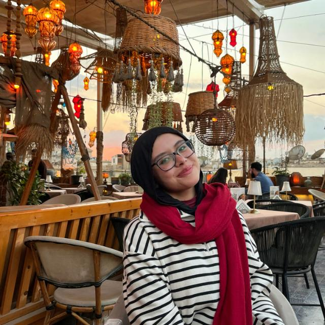

Hello, I'm Malak.
MS Studio is a studio of one — me, a calibrated monitor, and a quiet room in Zamalek.

I trained as a film student at the High Cinema Institute in Cairo and spent my first two years as an assistant editor on documentary teams across the MENA region. In 2020 I started taking my own clients; by 2022 that had become MS Studio — a small, deliberate cutting room rather than a roster.
I love a long first viewing. Lights dim, phone in the other room, and a second pass where every kept frame has to earn it. I love a director who tells me what the film is about, not just what it says.
Because it's just me, you work with the person doing the cutting — no account layer, no hand-offs between an editor and a finisher. The taste that shapes the assembly is the same taste that grades the last shot.
Three things I believe about a cut.
Story before craft
The first pass is always pen on paper. I find the spine of a piece before I touch a clip — what it needs to do, what it should never say.
Sound is half the picture
I treat audio as a co-author. Temp mixes go in on day one; every choice on the timeline is paired with what you'll hear in that frame.
Built for the screen
A film for the theatre breathes. A film for a phone has six seconds to land. I cut for the format — never a smaller, sadder version of one master.
The rough cut of a career.
High Cinema Institute, Cairo
BA in Film Editing. Cut my first festival short in the second year and never really stopped.
Assistant editor — documentary
Two years on regional doc teams, learning how to bring order to hundreds of hours and how patience reads on screen.
Went independent
First solo clients — music videos, brand films and a debut narrative short that screened at El-Gouna.
MS Studio founded
Formalised the cutting room. Lead editor on broadcast packages for Disney+ MENA and a Vodafone branded-doc series.
Cairo IFF selection
"Arwah" — lead editor — selected for the Cairo International Film Festival. Now balancing narrative work with a steady brand roster.
What's on the desk.
Tools change. Taste doesn't. I'm format-agnostic — working on the NLE a client already owns is almost always cheaper than fighting it. Comfortable on remote workflows across timezones, and equally happy in a real suite with a colorist nearby.